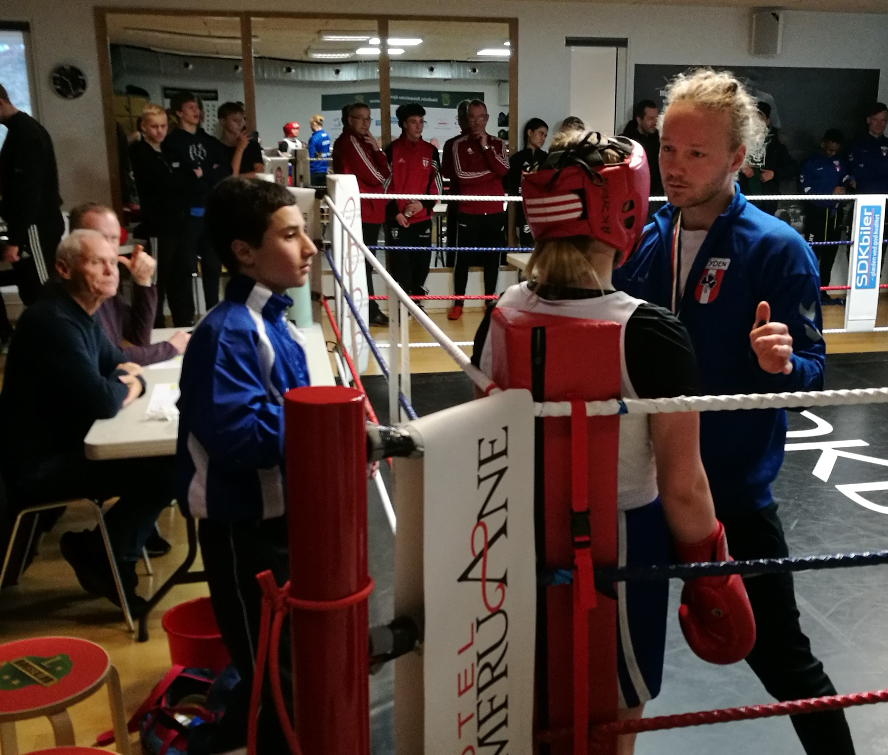

AK Jyden og Lindholm bokseklub afholdt i søndags et velbesøgt diplomstævne i Lindholms lokaler i solsidehallen. 40 kampe var på programmet. Jyden havde 8 boksere i ringen, der alle præsterede flot boksning. Nogle flere gange, hvilket resulterede i 11 diplomer.
